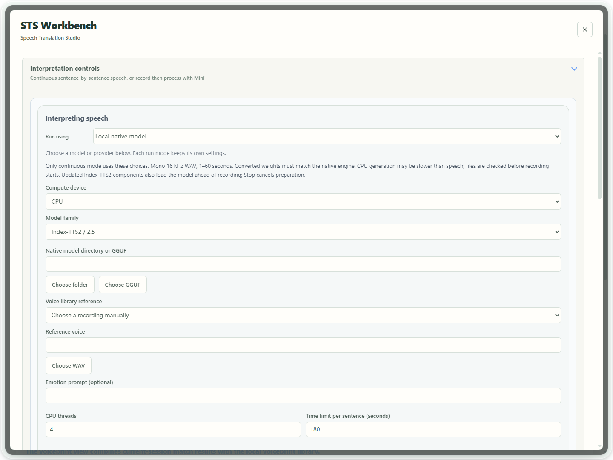
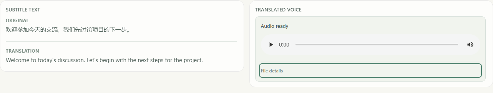
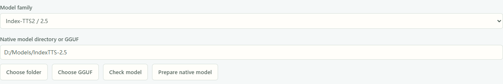
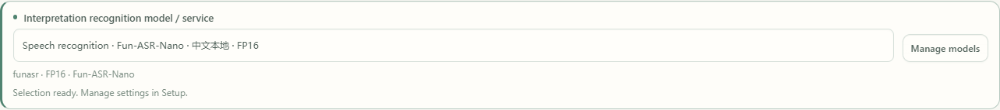

Scenario guide
Live interpretation: speech in, translated speech out
Choose continuous interpretation or Mini, then select a saved speech model or API connection. Local cloning also needs its checked reference; prepare converted weights explicitly when needed.
What you will get
Combine recognition, translation and synthesis to display captions and play translated speech. Truly low-latency interpretation still requires model- and device-specific verification.
Before you start
- Test transcription, text translation and target-language synthesis separately. Use headphones to avoid recording your own playback.
- Choose an explicit speech route. Native models, cloning servers, speech services/APIs and compatibility settings retain separate parameters. Save model locations, optional runtime folders and service connections in Setup guide, then select the saved entry for the chosen route. Cloning needs a valid reference.
- FireRedTTS3 Instruct uses CPU in the current Windows package, which does not provide CUDA components for this engine. Matching components can offer Play while generating · Experimental; the workbench plays speech automatically. Other complete-WAV routes still wait for each full request. Earlier playback depends on early audio delivery by the model or service; sustained realtime performance is not yet accepted.
- Native Index/VoxCPM references are generally 1–60 seconds; FireRed uses 1–10.24 seconds. Use clear single-speaker speech and its actual transcript when required. The Rust reader normalizes compatible formats and sample rates when needed, retaining originals. A readable float32 WAV does not have to be changed to PCM16 first.
Some configuration images show an earlier interface. In the current app, save model locations and service connections in Setup guide, then select saved entries at the corresponding workspace position. Reference, language, emotion and playback controls still apply.
Step by step
- 01
Check three stages and choose languages
Test transcription, model setup and cloning separately. Save recognition and speech models under Setup guide → Models & Params → Local model library, and save translation connections under API Config. Open Interpretation Workbench and select the saved recognition model and translation service. Choose source, primary target and any extra subtitle languages. For local segmented recognition, choose a compatible SenseVoice · ONNX or Fun-ASR-Nano entry rather than entering its folder again. This task uses the recognition and speech models currently selected in the workbench, which may differ from the main window. Check names and variants before starting. Begin with one target and add more after the workflow works.
Under Interpretation recognition model / service, choose a local model to recognize on this computer, or Saved realtime API to use the saved service for this STS task; audio is sent to that service. Use microphone recognition settings retains the main recording route. When that route is local, the saved STS model is used. If the API choice is unavailable, save the service in Setup and complete its realtime recognition settings under Recording settings. Continuous interpretation and Mini use the same choice without changing the main recording route or language.

Actual app UI · Select to enlarge; example data is not your result - 1Choose how to generate translated speech.
- 02
Select the speech route you have auditioned
Under Interpreting speech, choose the route you successfully auditioned, then select its saved model, model service or speech API. Model locations, optional VoxCPM2 runtime folders, endpoints and keys are saved in Setup guide; do not enter them again here. Reference audio, voice, emotion and playback remain task choices. Switching routes does not copy another route’s credentials or reference. A model server must already be running with the matching protocol.

Actual app UI · Select to enlarge; example data is not your result - 1Choose a speech service or API.
- 2Choose the provider matching your service.
- 3Enter a voice available through this service.
- 03
Choose continuous speech or record-then-process Mini
For speech translation during recording, use Continuous STS (experimental) at the top and end with Stop Live STS. Mini is separate: select Open Floating Mini, click its controller to record, then click again to end recording. Translation, speech generation and playback begin after the recording is saved; this is not continuous live playback. Try one mode at a time.
While Mini is generating speech, select Stop in the workbench to cancel that task and wait for it to finish stopping. You cannot start another recording while waiting. Exit Mini also stops the task and waits before closing the floating controller. For completed audio, Stop pauses playback and keeps replay available.
Completed or partially successful results can be replayed in the voice card. Expand File details to view the saved location or copy the path. Failed or cancelled tasks keep existing text without playing old task audio. Expand View details to inspect the message.

Current UI operation example · Controlled text and audio state; this is not evidence of actual model generation. Select to enlarge. - 1The text card contains only the original and translation.
- 2Replay translated speech in the same player used for automatic playback.
- 3Expand File details to view the saved location or copy the path.
- 04
Native mode: select a saved model, then check the reference
Under Interpreting speech choose Local native model and select a registered model matching your weights. Choose a reference and enter its transcript when needed, then use Check model to inspect files and reference without generating speech. Follow preparation guidance if weights need conversion. Starting interpretation does not automatically convert a large model. To add or edit a location, use Manage local models, finish setup to save, then select the entry.

Current UI configuration example · Sample path; no model checked, converted or loaded. Select to enlarge. - 1Choose the family matching your source weights.
- 2Enter the source folder; preparation updates this path.
- 3Check the model without generating speech.
- 4Explicitly prepare when conversion is needed; originals are retained.
- 05
When conversion is needed, explicitly Prepare native model
If Index-TTS2/2.5 or VoxCPM2 needs preparation, select its registered entry in Voice Studio and use Prepare native model. Required files are added within the model directory while retaining originals; recording stays unavailable during preparation. Index adds and selects a Native entry at the model-local .boundless-flow/native path; VoxCPM2 may keep its original folder. Interpretation selects the prepared and auditioned entry from the same library. Do not copy or paste its path or convert another copy. Select and check the reference and transcript for this task. On failure, follow the stated file or format issue; the original entry and files remain. FireRed source folders do not use Index conversion.
Current UI configuration example · Sample path; no model checked, converted or loaded. Select to enlarge. - 1Choose the family matching your source weights.
- 2Enter the source folder; preparation updates this path.
- 3Check the model without generating speech.
- 4Explicitly prepare when conversion is needed; originals are retained.
- 06
For FireRed, choose the original model, CPU and your own reference
First register and save the original FireRed root containing fireredtts3_instruct, redae and text_tokenizer in Setup guide. In the workbench select Local native model, that FireRedTTS3 entry and CPU; the current Windows package does not provide FireRed CUDA components. Use a clear single-speaker WAV lasting 1–10.24 seconds, preferably 3–5, with its actual transcript. Audition briefly in Voice Tools, then choose the same registered model and checked reference for interpretation. This route needs neither a separate model server nor Index conversion. Keep the full app folder and matching runtime components. Prepare native model does not supply missing components or weights. Recheck and audition after changing the reference or transcript.
The older screenshot illustrates control locations. Its CUDA setting is from an earlier setup; select CPU for FireRed in the current Windows package. For NVIDIA GPU use a supported Index-TTS2, Qwen3-TTS or VoxCPM2 route after checking its components and device.

App configuration example · No model or audio was started. Select to enlarge. - 1Use a 1–10.24 second reference and transcript; preferably 3–5 seconds.
- 2This control shows CUDA in the older screenshot; select CPU in the current Windows package.
- 3Choose FireRedTTS3.
- 4In the current app, select the FireRed entry saved in Setup guide.
- 07
Enable generation-time playback; the workbench plays speech automatically
Enable Play while generating · Experimental. The current workbench plays translated speech automatically and has no separate autoplay switch to turn on. Check the system default output, headphones and volume first. Each finalized full translation starts generation; PCM is delivered directly to native playback during generation. This does not accept arbitrary appended text. The early-sentence option is hidden while streaming is selected, so the two options do not combine. To wait for complete clips, stop interpretation and disable streaming. If the component supports complete WAV only, use the complete app folder containing updated FireRed components.

App configuration example · No model or audio was started. Select to enlarge. - 1Enable Play while generating · Experimental.
- 2Automatic speech is also required; sustained realtime remains unverified.
- 08
Prepare, then start continuous interpretation
For local speech, first check model files and the current reference in Voice Studio, then generate and audition a short target-language passage. For Speech service / API, select the saved connection and an available voice, then audition a target-language passage without a local TTS folder or reference. Load model ahead of time alone does not warm up inference. The newer workbench keeps Continuous STS (experimental) and Stop Live STS visible at the top. The current workbench plays speech automatically. Confirm the default output, headphones and volume, start and wait for supported loading/output preparation before speaking. Stop Live STS cancels preparation. Loading is preparation time; retain first reference processing, first actual inference and runtime reload timing separately rather than assuming warm-up is complete. With supporting FireRed components, Prepare model and reference in Voice Tools can prepare the reference ahead of time; an actual short audition is still required. Older components that only preload the model leave reference processing for the first utterance. Preparation does not create playable speech.

Actual app UI · Select to enlarge; example data is not your result - 1Start is primary. Stop stays here throughout the session.
- 2Read current status. Closing the panel keeps the session running.
- 09
Try short passages and observe runtime first audio
Speak a few short passages and inspect source text, translation, synthesis and backlog. Check Source start → first audio, Source end → first audio and p50/p95. Missing timing shows — rather than zero. UI timing is a software estimate, not a physical loudspeaker measurement.

Actual app UI · Select to enlarge; example data is not your result - 1Read source-start and source-end latency separately.
- 2Check recognition after source end and observed translation time.
- 3Missing clock alignment produces no estimate.
- 10
Try streaming or early sentences when supported
For CosyVoice/Fish, try Play audio as it arrives after checking the stated PCM/WAV requirements. Native Synthesize translated phrases early · Experimental is off by default and still produces a complete WAV per request. It may change pauses or total work. Audition before choosing; playback mode does not make a model genuinely incremental.
Stop interpretation before changing this setting. In native cloned speech, enable Synthesize translated phrases early · Experimental to reveal Speech delivery. Low latency is the default; it prioritizes an earlier start, with possible waits between phrases. Smoother continuity aims for steadier handoffs and may add startup waiting. It does not guarantee uninterrupted playback. This choice applies only to language-checked translation phrases. FireRed Play while generating hides the control. Your choice is saved.
The earlier screenshot below shows the early-synthesis option. The current app also displays Speech delivery beneath it when enabled.

Actual app UI · Select to enlarge; example data is not your result - 1Enable early sentence synthesis under Local native model; it is off by default.
- 2Final text is combined within size limits. Each request still produces a complete WAV. Listen for pauses and voice quality.
- 11
Click Stop Live STS to end and retain the run result
Select Stop Live STS to stop translated speech immediately. Recording finalization and record saving may continue; wait while Saving interpretation records appears. Hiding or closing the interpretation panel may leave the task running. Keep statistics, failures and slow passages. Confirm saving is complete before starting another task, and do not move models or change paths during a run.
Actual app UI · Select to enlarge; example data is not your result - 1Start is primary. Stop stays here throughout the session.
- 2Read current status. Closing the panel keeps the session running.
- 12
Text without speech: stop, then audition one sentence
Select Stop Live STS, then open Voice Tools → Model Setup and choose the same registered model, reference and transcript. After Check model passes, enter one target-language sentence in Synthesis text and use Generate cloned voice. Marker 1 identifies the check/generate actions; marker 2 reminds you that file inspection is not audio generation. If no audio appears, resolve the stated file, runtime component or reference issue. Replay the generated audio. If replay remains silent, inspect default output, mute, headphones and volume. After hearing the expected voice, select the same saved model and reference in interpretation, check and restart. No model or runtime path needs to be entered again. The workbench plays automatically; there is no separate autoplay switch.

Actual app UI · Select to enlarge; example data is not your result - 1Check and generate stay above the editing area.
- 2A file check does not prove voice quality.


Choose recognition for interpretation


Save CosyVoice once, then choose an account voice
This section previews the CosyVoice connection flow in the next update. The currently delivered Windows r475 installer does not include this new entry; use an updated build that contains it.
- Open Setup guide → API Config and enable Alibaba Cloud · CosyVoice. This card is for text-to-speech only. Enter the complete
wss://endpoint for your own workspace and region, ending in/api-ws/v1/inference. Replace any WorkspaceId placeholder, then enter the matching API Key and TTS model. Complete the guide to save. - Return to Interpreting speech → Speech service / API and explicitly select Setup · Alibaba Cloud · CosyVoice · Incremental text. Check the model and host. The app does not guess a region, copy an Aliyun text or Qwen Audio 3.1 connection, or start interpretation automatically.
- Enter a voice ID that matches the model, or choose an account voice below. The voice starts empty when you first select this source. The speed range is
0.5–2. Use supported instructions for emotion; there is no separate emotion parameter. Custom connections and other sources keep their own usage drafts.
Get the complete endpoint from your Alibaba Cloud account. See the official WebSocket guide for its format and speech model reference for model, voice and instruction support. Account access, region, model and voice must match.
Find an existing voice before creating one
- Click Clone / design / select voices in STS. The panel opens on My voices and shows the saved host and model without duplicate connection fields. Click Find cloud voices to query the account. Opening the panel does not query, upload or create anything.
- For a new voice, select Design from text or Clone a recording, fill in the requested fields, then click the creation button.
cosyvoice-v2supports account queries, existing voices and reference cloning; text design is disabled with an explanation.cosyvoice-v3.5-plusandcosyvoice-v3.5-flashrequire a created cloned or designed voice and have no preset voices. - Select Check status, then Generate preview. Listen to the complete preview before selecting Use for interpretation. Returning to STS changes only the voice ID. The saved source, instructions, speed and playback choice stay selected, and custom-connection drafts remain separate.
| Model | Speaking-style instructions |
|---|---|
| cosyvoice-v3.5-plus / v3.5-flash | Cloned and designed voices accept natural-language instructions. |
| cosyvoice-v3-plus | Preset voices use the formats in the voice list. Cloned and designed voices do not support instructions. |
| cosyvoice-v3-flash | Preset voices use listed formats; cloned and designed voices accept natural-language instructions. |
| cosyvoice-v2 | Instructions are unsupported. Clear any retained instruction draft first. |
Instructions allow at most 100 weighted characters: Han ideographs count twice and all other characters once. For example, 50 Han ideographs reach the limit. A voice must match the target model used to create it; check the voice again after changing models. If the service rejects an instruction, its draft remains available to correct.
Queries, creation and previews contact the selected service; creation and synthesis may incur charges. After Cancel or a change to the saved connection, wait for the original request to finish before the controls unlock or the new connection applies. If creation is unconfirmed, query the original account before creating again. The app does not automatically retry creation or switch away from a disabled or removed source.
Continuous mode can supply translated text progressively and receive audio as it arrives. Mini still waits for you to stop the clip, then translates and generates complete audio before playback. Try short text with your own account, target language and output device before a meeting.

- 1Use the connection saved in Setup. Manage connection opens the guide.
- 2Find cloud voices runs only when clicked. My voices is the initial tab.
- 3Choose a voice and generate a preview. Use for interpretation requires the complete preview first.

- 1The saved CosyVoice source stays selected.
- 2Only the voice ID changes to the auditioned account voice.
- 3Return to account voices here without re-entering the connection.
Save MiniMax once, then choose its speech mode
- In Setup guide → API configuration, enable the MiniMax card, enter the service address and API key, and choose its TTS model. Finish the guide to save. Opening the card alone does not start interpretation or create a voice.
- Return to STS → Speech settings → Speech service / API. Explicitly choose Setup · MiniMax · Complete text or Setup · MiniMax · Incremental text. Check the displayed model and host. A saved full endpoint may fit only one mode; fix the address in Setup if the other mode is unavailable.
- Choose or enter an account voice ID before starting. A new MiniMax source starts without a selected voice. Both modes share the saved address, key and model, but retain separate voice, emotion and speed choices. Switching modes does not overwrite the other mode’s choices or your older custom connections.
| Chosen source | How translated text reaches speech synthesis |
|---|---|
| Complete text · SSE | Each finalized translated segment is submitted as a whole. Its audio can still arrive and play in chunks. |
| Incremental text · WebSocket Bidi | Supports supplying translated text progressively while audio arrives. Select this source explicitly; the app does not silently switch protocols. |
The protocol distinction follows MiniMax’s HTTP speech API and bidirectional WebSocket API. Mini still waits for you to stop recording, then generates a complete audio file before playback, whichever source you choose.
Find, clone or design an account voice
- Click Manage voices under the STS voice settings. The MiniMax voice panel automatically uses the selected saved connection and shows its host and model; it does not ask for the URL, key or model again.
- Click Find voices to query the account. For a new voice, open Clone or Design, fill in the requested recording or description, then click the explicit creation button. Opening the panel does not query, upload, create or synthesize anything.
- Click Audition for a voice. Listen to the complete result, then click Use for interpretation. The current source keeps its protocol, emotion and speed; only its voice changes. Return to STS and check the selected source and voice ID.
Voice creation and synthesis may incur charges; a reference is uploaded only when you click the clone operation. Cancel waits for the current operation to finish before releasing its controls. If creation is unconfirmed, keep the voice ID, restore local records or audition that ID using the original connection, and avoid submitting creation again. A disabled, removed or changed saved connection requires attention in Setup; it does not fall back to a custom connection.
Try short text with your own account, target language and output device before a meeting. Real cloud sound quality and latency have not been accepted by the controlled examples below.

- 1The saved connection supplies the host and model. Manage it in Setup.
- 2Click Find voices to query the account; opening this page does not query it.
- 3Choose a voice and click Audition. This inventory is a controlled example.

- 1The original Complete text or Incremental text source stays selected.
- 2Only the auditioned voice changes; this voice ID is an example.
- 3Use Manage voices to query, clone, design or audition without re-entering credentials.
Use a speech API in Mini
The same choice under Interpreting speech → Speech service / API applies to both continuous segment speech and Mini. This route needs no local TTS model folder or reference recording. Use a preset or previously created voice ID available to your account.

- 1Choose the saved service connection. Endpoints and keys are managed in Setup.
- 2Enter a voice ID available to your account; coral is the example shown here.
- 3Mini records a clip, then translates and generates complete audio after Stop. Wait for cancellation to finish before recording again.
- Save the speech connection and key in the Setup guide, then audition a short passage.
- Return to Interpreting speech, choose Speech service / API and the saved connection, then select a voice. Adjust expression controls only when the service supports them. You do not need to enter the endpoint or key again.
- Open Floating Mini and select Start. Speak after Recording appears and the input meter responds, then click again or press RightAlt to end the clip.
- Wait for translation and speech generation. Mini generates a complete WAV before playing it. Even when a service supports streaming, you must first stop recording this clip.
- To cancel, select Stop in the workbench or Exit Mini. Wait for network requests and file saving to finish stopping before recording again. Wait for the task to be confirmed ended before changing its settings.
Available adapters include OpenAI PCM, MiniMax SSE / WebSocket, CosyVoice, Doubao SSE / WebSocket, ElevenLabs and the VibeVoice service. Availability depends on the saved connection and account permissions. Use Qwen3.1 TTS Next in Voice Studio; that adapter is not available in Mini here.
If an older configuration enables several speech routes, explicitly choose one first. Invalid connection, voice or expression settings produce an error rather than silently switching to a local model. Translated text is sent to the selected speech service. If recognition also uses an API, recorded audio is sent to that recognition service. Mini and continuous interpretation add no audio watermark. Test voice quality and waiting time with your own account, languages and devices.
Use OpenAI TTS saved in Setup
- Under Setup guide → API Config, enable OpenAI, enter the Base URL and API Key, then choose a TTS model from
tts-1,tts-1-hd,gpt-4o-mini-ttsorgpt-4o-mini-tts-2025-12-15. Complete the guide to save it. - Return to Interpreting speech → Speech service / API and explicitly select the connection beginning with Setup · OpenAI TTS, followed by its model and host. Enter only the voice ID for this task; the default is
alloy. You do not need to re-enter the endpoint, key or model. tts-1andtts-1-hddo not support instructions. Clear Speaking style, or choose a model that supports instructions when you need that field. This entry uses a fixed rate of1and has no separate emotion label.
Enabling the OpenAI configuration card does not start interpretation. Select the connection in the workbench and start manually. Existing custom connections remain separate and selectable. If the selected Setup connection is disabled or removed, Start reports an error rather than automatically switching to another connection or a local model.
Translated text is sent to the selected service, and cloud requests may incur charges. Audition a short passage first. Voice quality and latency with a real account have not been verified.

- 1Explicitly choose Setup · OpenAI TTS and check the displayed model and host.
- 2Choose a voice ID for this connection. The default shown here is alloy.
- 3The same connection works in Mini after recording stops; Mini waits for complete audio before playback.
Mini locks service, voice, language and configuration choices while awaiting start confirmation, recording, finalizing the clip, translating, generating complete audio and playing it. After selecting Stop, wait for confirmation that the task has ended. If cancellation is unconfirmed or fails, the choices remain locked; select Stop again to retry. Change settings or record another clip only after the task is confirmed ended. You can still stop recording, generation or playback, collapse cards and view their content.

- 1Run using remains locked while the Mini task is active.
- 2Stop the active task before changing settings. Wait for end confirmation; retry Stop if cancellation is unconfirmed or fails.
- 3The selected voice ID is retained and cannot be edited until the task is confirmed ended.
Confirm recording and processing in Mini
Click Start in the floating Mini. Wait while Starting is shown; speak when it shows Recording. The bars respond to the strength of the microphone input. Click again or press RightAlt to end the clip, then wait for stopping, translation, generation and playback. Do not repeatedly start during processing. If an error or missing acknowledgement appears, read the button tooltip and address the cause before retrying; clicking alone does not confirm that recording started. Mini processes a completed clip. Use Continuous interpretation in the studio for ongoing speech translation.
After stopping, wait for records to finish saving
Select Stop Live STS to stop translated speech immediately. Recording finalization and record saving may continue afterward. If Saving interpretation records appears, wait; stopped playback does not confirm a completed save.
If records remain unsaved, check free space and write access at the save location, then select Retry saving. The app prevents starting another task, restarting the app or restoring a different draft while this recording still has unsaved work. Finish saving this run first.
To leave the window, choose Close interface · Keep working in the exit dialog. This hides the interface and keeps the current app process running. Keep the computer on; do not quit the app, restart it or shut down before saving completes. Closing the interpretation panel only hides that panel and may leave an active run working.
To abandon the unsaved part, explicitly choose and confirm discarding this draft. Hiding the interface does not discard it. Unsaved work is retained only in this running app; do not rely on recovery after a restart.

- 1Unsaved interpretation records remain in this running app.
- 2Retry saving after storage becomes available.
How to verify success
Short speech produces matching text and translated speech, stopping prevents new output, and statistics retain valid samples. Realtime suitability depends on continuous backlog, voice quality and device measurements.
If something goes wrong
Interpretation records are still unsaved
If records remain unsaved, check free space and write access at the save location, then select Retry saving. The app prevents starting another task, restarting the app or restoring a different draft while this recording still has unsaved work. Finish saving this run first. To leave the window, choose Close interface · Keep working in the exit dialog. This hides the interface and keeps the current app process running. Keep the computer on; do not quit the app, restart it or shut down before saving completes. Closing the interpretation panel only hides that panel and may leave an active run working.
Mini is still waiting after Stop
Wait for the current task to finish stopping before recording the next passage. Do not repeatedly reopen Mini or start other tasks while waiting. If stopping is not confirmed, select Stop to retry. To leave Mini, select Exit Mini again. Continue after stopping is confirmed.
Text appears but no speech
Stop the current task and wait for it to finish stopping. For Speech service / API, check the selected saved connection, account permissions and voice ID, then audition a short passage. Follow the error message if the service refuses a parameter or returns unusable audio; a local model will not be substituted automatically. For local speech, select Stop Live STS first. Confirm that Interpreting speech uses the route and registered model you successfully auditioned. For prepared Index weights, choose the Native entry from the library instead of copying a path. Check the matching reference and transcript. Generate one short target-language sentence in Voice Tools. If no audio is produced, follow the status message; if replay is silent, check default output, headphones, mute and volume. Restart with the same selections after an audible audition. The workbench plays automatically without a separate autoplay switch. Mini is a separate record-then-process workflow, not continuous interpretation.
Preparation stalls / no first audio
Select Stop Live STS and identify whether the status reports a model, reference, output device or service issue. Follow the last step to test a short audition and output separately. The current workbench plays automatically. Missing first-audio timing shows —; it does not indicate a measured delay of zero or prove that no audio was generated.
Translated speech falls behind
Inspect backlog and use the available catch-up controls. Reduce extra languages and choose a faster auditioned setup. Skipping playback does not delete source text or translation.
The app keeps transcribing its playback
Use headphones and inspect the input. Do not feed playback back as new speech. Echo handling in long sessions still requires real-device verification.
FireRed streaming will not start
For FireRed in the current Windows package, select CPU and check the registered model and matching app components. The current workbench plays automatically and does not expose a separate autoplay switch. Select Stop Live STS, resolve the stated component or reference issue, and complete a short audition before restarting. Do not bypass messages by renaming models or omitting components.
Next steps

Choose once, use in each workspace
Register each local model in Setup with a recognizable name and its size or quantization in the variant field. Save separate profiles for different variants. VoxCPM runtime folders are saved with the model.
Workspaces show the model’s purpose, name and saved variant. Older entries named after a backend, such as ONNX, show their folder name to help tell them apart. A displayed name does not verify the files or their capabilities; use Check model before a short trial.
In the translation studio, speech recognition converts input to text. For local speech routes, segment speech voices a completed Mini recording, while continuous cloned speech uses the selected model and reference. For Speech service / API, Mini and continuous segment speech use the same saved connection and voice. Select the route for your task. Manage models opens Setup; there is no need to enter the path again.
For supported continuous parameters, turn the dial or focus it and use arrow keys. The number field remains available for precise entry. During operation, unavailable controls are dimmed and cannot change the running model.